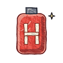
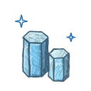
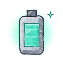
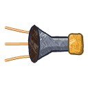
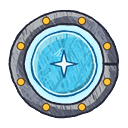
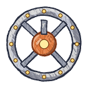
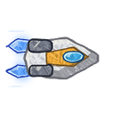
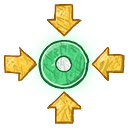
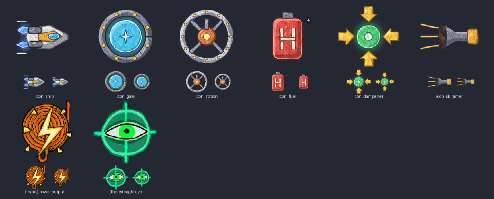

The ship's limits change with where it is, never with a mode the player has to pick. The boundary that matters is the edge of the gravity band, 1.8 R from the centre: inside it the anchor field pulls and hover compensation cancels it; outside it the field is zero, which gravity-model already makes the "in space" flag. Only there does the transit drive light.
Tenebris's anchor field: full pull out to 1.4 R, a linear taper to zero by 1.8 R, nothing beyond. Surface gravity is gravity_g × 25 m/s², declared per body. Because the band scales with R, a small moon lets go of you a kilometre up and a giant holds you for 15 km.
Every body is on rails, so the map is exact for any day. A trip is the climb out, the transit (accelerate at 60 m/s² to 4 km/s, coast, flip, brake) and the descent. The route is a straight line, bent round the star when it would pass within 60 km. Drag the day: times change with where the worlds are, not with a window you have to wait for.
Distance is centre to centre. Times are minutes:seconds of play, door to door, with no lanes. Δv is the transit drive's use one way; the runabout's tank holds 30 km/s. Moons from their planet: Lantern is 26 km from Pale Blue, about 1:40 door to door.
The ship's 20 m/s² is never spent holding it up. Hover compensation cancels the anchor field's pull at any altitude, as the walker's ground does, and the stick's 20 m/s² is all yours. So a ship lifts off a 1.6 g giant's platform as easily as off Pebble; what changes is how long the band holds it, and that hover compensation has to be strong enough (40 m/s² at Amber). The lift drive in the air burns nothing: getting stranded on the ground is never a fuel problem.
Motion is Newtonian; the dampeners are an assist, toggled with a key as today. On, letting go of the stick bleeds velocity relative to the current frame at the ship's linear damping (1.0 per second) and stops rotation at 4 per second, so a ship parks itself next to a moving station. Off, the ship coasts: what the transit uses, so a coast costs nothing.
A station is on rails like a body, and has its own local frame: the people walking its deck simulate in it. Docking is flown, with the corridor's lights to steer by at night, and finished by clamps.
| Station | Where | On rails as | What it is for |
|---|---|---|---|
| Highport | Over Pale Blue, 12 km up, above the first town | Fixed in Pale Blue's turning frame, so it hangs over one place | The first dock; ship sales, repairs, hydrogen |
| Skimmer platform | Amber's cloud tops (and one at Glaucus) | A point on the turning giant, held up by hover compensation in 1.6 g | Fuel from the scoop; the transfer above ends here |
| Rime depot | On Rime's ice, by the drill | A surface base: it turns with the moon | Water ice made into hydrogen; the cheapest fuel in the system |
| Lane gates | Near Pale Blue, Amber and Glaucus (if built) | Each in its body's frame, 40 km out | Long hops in a minute (see Lanes) |
The tank holds 30 km/s of Δv for the transit drive. Lift, hover and air flight are free. A one-way trip spends twice its peak speed. When the tank is dry, a reserve still drives the ship at 400 m/s in space, so a ship always gets home, slowly; nobody is stranded.

Hydrogen cell: the fuel
Water ice: Rime, Lantern's poles
Helium-3: skimmed, double strength
The scoop, flown low over a giantA pair of gates makes a lane: fly through one aligned and slow, and the ship is carried at 25 km/s to the other, which rides its own body's rails, so the lane's length changes through the year. Nothing is simulated in between. Pale Blue to Glaucus drops from eight to ten minutes to about two and a half. Recommended for later: the system works without them, and building the first pair is a goal worth having.

Lane gate
Station
The runabout
DampenersThe icons on this page, and the globes' maps, are painted by code with the crayon kit in .claude/skills/hand-drawn-illustration, copying the owner's friend's method. They are not the friend's drawings. Script: tools/art/travel_art.py, two passes against the sheet below (the dampener's arrows pulled in; the ship's engine flames enlarged).

Each row has a recommendation. None is decided until the owner says so.
| # | Question | Options | Recommendation |
|---|---|---|---|
| T1 | How fast is space? Sets every trip's length. | 2 km/s (longest trip 18 min); 4 km/s (10 min); 8 km/s (7.5 min, most of it spent accelerating). | 4 km/s at 60 m/s²: Lantern in under two minutes, the far giant in eight to ten. |
| T2 | What burns fuel? | Everything with thrust; only the transit drive. | Only the transit drive. Flying round a world, landing and hovering stay free. |
| T3 | An empty tank. | Stranded until rescued; a slow reserve drive. | A 400 m/s reserve in space. Slow enough to make refuelling matter, and nobody loses a ship. |
| T4 | Lanes and gates. | None; there from the start; built by the player later. | Built later, as a goal: one pair to Glaucus first. |
| T5 | Where the ship changes frame. | At the gravity band's edge; at a separate frame sphere per body. | A frame sphere (60 km round a planet or moon, 200 km round a giant). Orbits move at under 7 m/s, so the rebase at the tick boundary is invisible. |
| T6 | How much the ship flies itself. | Manual only; an "engage transit" assist that burns, flips and brakes to a target; full autopilot. | The assist: the player still lifts off, aims and docks; the assist runs the burn and the flip with the stick able to take over. |
| T7 | Docking. | Fully manual; clamps finish the last 10 m. | Clamps below 10 m and 1 m/s. |
| T8 | The star. | A hard wall; heat that rises the closer you go. | Heat, from 60 km in. Routes bend round it. |